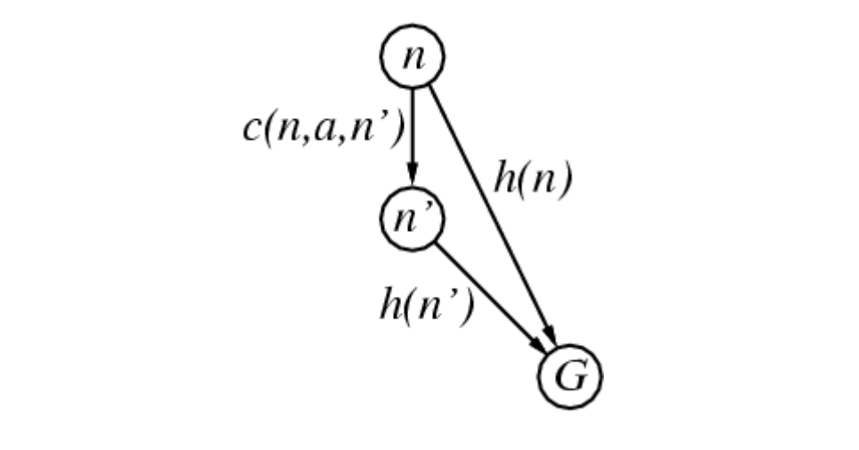
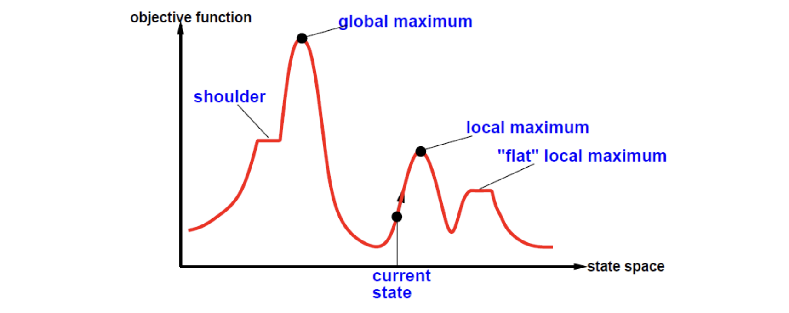
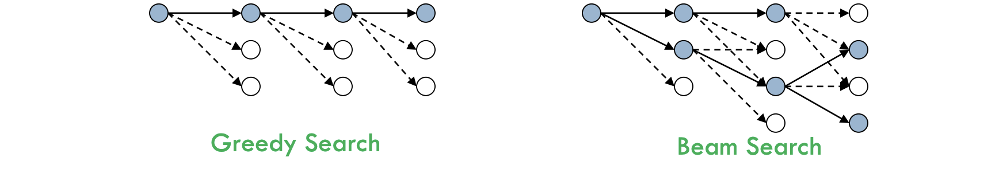
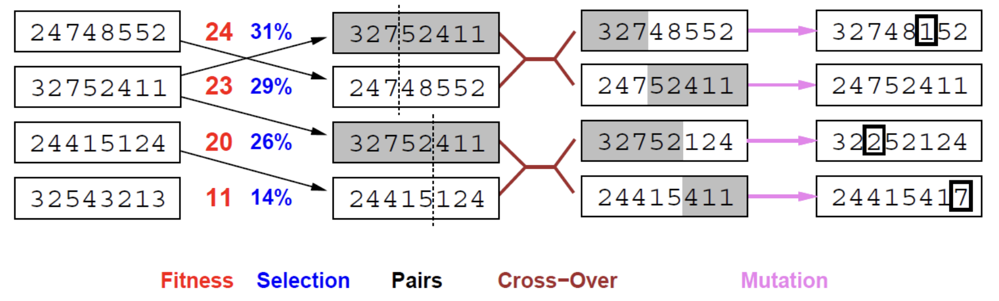
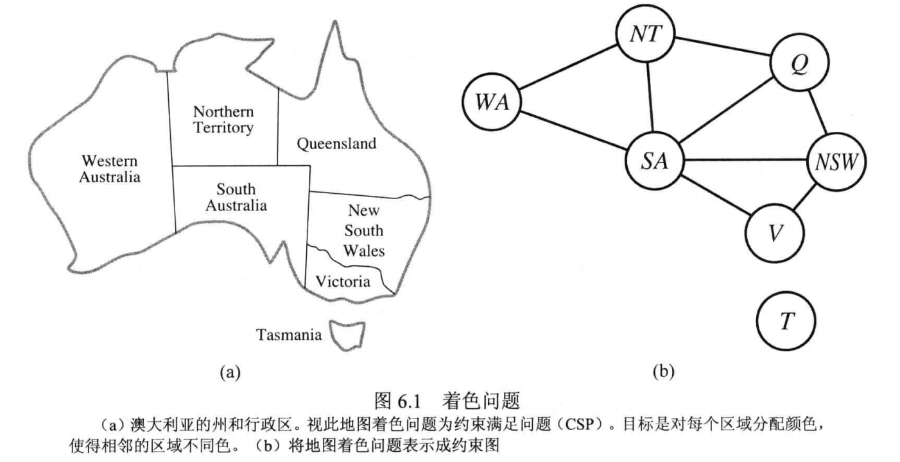

Agent 的概念¶
percepts：指来自外部环境的感知数据，通常由传感器收集，例如图像、声音、触觉等。可以被视为人工智能系统的输入，因为它们提供了系统了解和响应其环境的基础。
- Agent 将 percepts 映射为 actions，对 environment 产生影响
- Agent 运行在物理机器（某种 architecture）上以产生 f
问题求解¶
Agent 设计¶
前提¶
- 环境是可观察的：Agent 总是知道当前状态
- 环境是离散的：在给定状态，可选择的行动是有限的
- 环境是已知的：Agent 知道行动到达的状态
- 环境是确定的：Agent 的动作只有一个结果
Agent 的简单设计¶
- 形式化（formulation）
- 搜索：寻找行动序列
- 执行：将搜索得到的行动付诸实施
seq: list[Action] = [...] # 行动序列
state = ... # 当前状态
goal = ... # 目标，问题没有形式化，一开始为 null
problem = ... # 问题的形式化
def SIMPLE_PROBLEM_SOLVING_AGENT(percept) -> Action:
state = UPDATE_STATE(state, percept)
if seq is empty:
goal = FORMULATE_GOAL(state)
problem = FORMULATE_PROBLEM(state, goal)
seq = SEARCH(problem) # 根据问题找到动作序列
action = FIRST(seq)
seq = REST(seq)
return action
问题的形式化¶
一个问题可以用五个组成部分形式化表述：
- 初始状态
- 行动：\text{Action}:S\rightarrow S，\text{Action}(s) 返回在 s 下可执行的动作集合
- 转移模型：\text{Result}:S\times A\rightarrow S，\text{Result}(s,a) 返回在 s 下执行 a 转移到的状态
- 目标测试：确定给定的状态是不是目标状态，可能是一个集合，测试时检查给定的状态在不在此集合中
- 路径耗散：即边权，采用行动 a 从 s 转移到 s' 的路径耗散用 c(s,a,s') 表示
问题的解就是从初始状态到目标状态的一组行动序列，解的质量由路径耗散函数度量，具有最小耗散的解即为最优解。
增量形式化：
- 状态
- 初始状态
- 行动
- 转移模型
- 目标测试
- 路径耗散
问题实例¶
- 八数码问题
- 八皇后问题
基本搜索算法¶
搜索树：结点有重复，但登记过程简单
搜索图：结点无重复，但登记过程复杂（每次都要查重），省空间，费时间
搜索树节点数据结构¶
- n.\text{STATE}：对应状态空间中的状态
- n.\text{PARENT}：节点的父节点
- n.\text{ACTION}：父节点生成该节点时进行的行动
- n.\text{COST}：代价，一般用 g(n) 表示，指从初始状态到达该节点的路径消耗
搜索树数据结构¶
- 队列，可以是 FIFO 队列，可以是 LIFO 队列，也可以是优先队列
搜索算法评价¶
- 完备性 Completeness：能否找到解？
- 最优性 Optimality：是否总能找到最优解？
- 时间复杂度：节点生成数量
- 空间复杂度：过程中内存中最大节点数
AI 算法的复杂度通常由下面三个量来表达：
- b：分支因子，任何节点的最多后继数
- d：目标节点所在的最浅的深度
- m：状态空间中任何路径的最大长度
无信息搜索¶
又称盲目搜索
宽度优先搜索 Breadth-first Search¶
- 做法：先扩展根结点，接着扩展根结点的所有后继，然后再扩展它们的后继，依此类推。
- 性质：在下一层的任何结点扩展之前，搜索树上本层深度的所有结点都应该已经扩展过。
- 实现：每次总是扩展深度最浅的结点，可以通过将边缘组织成 FIFO 队列来实现。
Advantages：
- 完备，并且知道目标节点生成后就知道是最浅的，否则将不会被生成
- 如果路径代价是深度的非递减函数，则 BFS 是最优的，最 general 的情况是所有代价都相同
Disadvantages：
- 生成的节点总数 O(b+...+b^d)=O(b^d)，是指数的
- 有路径重复问题
一致代价搜索 Uniform-cost Search¶
- 做法：拓展路径消耗 g(n) 最小的节点 n
- 实现：将边缘节点集组织成按 g 值排序的队列
- 性质：对任何单步代价函数都是最优的
和 BFS 的不同点
- 目标检测是在节点被选择拓展的时候，而不是节点生成的时候，因为不一定第一个生成的目标节点是在最优路径上
Advantages：
- 最优，当 n 被扩展的时候，到达 n 的最优路径已经被搜索出来了，否则不会扩展 n
- 完备，只要每一步的代价都是正数（为 0 会导致 NoOp 循环）
Disadvantages：
设最优解代价 C^*，每个行动的代价至少为 \varepsilon>0
- 最坏情况下的复杂度为 O(b^{1+\lfloor C^*/\varepsilon\rfloor})，比 O(b^{d+1}) 大得多（除非所有代价都相等，否则将对代价小的行动有偏好）
- 由于目标检测延后，UCS 会比 BFS 多做一些工作
深度优先搜索 Depth-first Search¶
- 做法：总是扩展最深的节点
- 实现：使用 LIFO 队列
- 性质：最新生成的节点最早被扩展，每次被扩展的都是最深的未被扩展的节点
Disadvantages：
- 严重依赖使用图搜索/树搜索
使用避免重复状态和冗余路径的 DFS 图搜索在有限状态空间是完备的，因为其至多扩展至所有节点；树搜索则不完备，会陷入死循环。
- 节点生成可能非常大
Advantages：
- 可能无需耗费额外内存，或者耗费很少的额外内存。因为一个节点被扩展之后，其所有后代都扩展后此节点就被删除。如果分支因子 b 、最大深度 m ，则 DFS 存储的节点数是 O(bm)
- 还可以改装成回溯搜索，每个被部分扩展的节点将记住其下一个要产生的节点，这样内存只需要 O(m)
深度受限搜索 Depth-limited Search¶
做法：设置深度界限 l，深度为 l 的节点当作没有后继
注意区分是标准的无解（failure）还是在界限内无解（cutoff）
迭代加深的深度优先搜索 Iterative Deepening Search¶
def ITERRATIVE_DEEPENING_SEARCH(problem):
for depth in 0~infty:
result = DLS(problem, depth)
if result != cutoff:
return result
上层节点重复生成多次影响不大，因为绝大多数节点都在底层
Summary¶
- b：分支因子，任何节点的最多后继数
- d：目标节点所在的最浅的深度
- m：状态空间中任何路径的最大长度
| Criterion | BFS | UCS | DFS | DLS | IDS |
|---|---|---|---|---|---|
| 完备性 | Yes | Yes | Yes | ||
| 时间复杂度 | O(b^{d+1}) | O(b^{\lceil C^*/\varepsilon\rceil}) | O(b^m) | O(b^l) | O(b^d) |
| 空间复杂度 | O(b^{d+1}) | O(b^{\lceil C^*/\varepsilon\rceil}) | O(bm) | O(bl) | O(bd) |
| 最优性 | Yes | Yes | Yes |
启发式搜索：最佳优先搜索¶
做法：基于评价函数 f(n) 选择被扩展的节点（类似用此替换 UCS 的 g(n)）
贪婪最佳优先搜索¶
做法：只使用启发式信息，即 f(n)=h(n)
最坏情况下的时间和空间复杂度都是 O(b^m)
A*搜索¶
做法：f(n)=g(n)+h(n)
如何保证最优性？
- h(n) 是可采纳的，不会过高估计到达目标的代价，则 f(n)\le C^*
- h(n) 是一致的（单调的），类似三角不等式：h(n)\le c(n,a,n')+h(n')
- 一致的启发式都是可采纳的，第二个条件比第一个条件强
性质：
- 如果 h(n) 可采纳，则 A* 的树搜索版本是最优的
- 如果 h(n) 是一致的，则 A* 的图搜索版本是最优的
最优性的证明
假设某个非最优的目标节点 G_2 生成了，而到达最优节点 G 的最短路径上的节点 n 还未扩展。
- f(G_2)=g(G_2)，因为 G_2 是目标，h(G_2)=0
- g(G_2)>g(G)，因为 G_2 不是最优的
- f(G)=g(G)，因为 G 是目标，h(G)=0
- f(G_2)>f(G)，由上可得
- h(n)<h^*(n)，因为 h 是可采纳的
- f(n)=g(n)+h(n)\le g(n)+h^*(n)=g(G)=f(G)
- f(n)\le f(G)<f(G_2)，所以假设是不成立的，如果存在这样的 n 未被扩展，不可能扩展到次优目标节点
h^*(n) 表示从节点 n 到目标节点的最优路径的实际代价
一致性的性质
 $$ \begin{aligned} f(n')&=g(n')+h(n')\ &=g(n)+c(n,a,n')+h(n')\ &\ge g(n)+h(n)\ &=f(n) \end{aligned} $$
一致性是指由当前节点 n 出发，到达任一后继节点 n' 路径上的 f 值不会下降。
其他性质：
- A* 算法将会扩展所有 f(n)<C^* 的节点
- A* 算法将会扩展某些 f(n)=C^* 的节点
- A* 算法不会扩展任何 f(n)>C^* 的节点
例子：八数码问题
h_1(n)= 错位的棋子数
h_2(n)= 所有棋子到目标位置的曼哈顿距离和
占优势（Dominance）
如果任意节点 n，h_2(n)\ge h_1(n)，则说前者 dominates 后者
除了某些 f(n)=C^* 的节点，使用 h_2 的 A 算法不会比使用 h_1 的 A 算法扩展更多的节点
证明：因为「A 算法将会扩展所有 f(n)<C^* 的节点」还可以说成「A 算法将会扩展所有 h(n)<C^*-g(n) 的节点」，这样就有一个包含性
使用松弛（Relaxation）涉及可采纳启发式¶
问题：八数码问题的 h_2 是如何被提出来的？计算机能不能机械地设计出这样的启发式？
观察：
- h_1：如果每个棋子可以随便移动，这个启发式将给出最优确切步数（画画试试！）
- h_2：如果每个棋子可以随便移动到相邻的位置上，甚至可以移动到已经被其他棋子占据的位置上，这个启发式将给出最优确切步数
构造松弛问题：
- 原问题：一个棋子可以从方格 A 移动到方格 B ，如果 A 与 B 水平或者垂直相邻而且B是空的
- 松弛1：一个棋子可以从方格 A 移动到方格 B ，如果 A 与 B 相邻（h_2）
- 松弛2：一个棋子可以从方格 A 移动到方格 B ，如果 B 是空的
- 松弛3：一个棋子可以从方格 A 移动到方格 B（h_1）
如果有一个可采纳启发式集合 \{h_1,..,h_m\}，从中如何构造一个更好的启发式？ $$ h(n)=\max{h_1(n),...,h_m(n)} $$ 上面这个启发式是可采纳的，容易证明是一致的，并且比所有成员启发式都更有优势
有信息搜索：局部搜索算法¶
有些问题不关心路径，比如八皇后问题只关心最后的局面（状态）
爬山法¶
做法：不断向值增加的方向移动，到达一个「峰顶」时终止
问题：不言而喻

解决：随机重启
模拟退火搜索¶
做法：随机移动，如果移动使局面改善，则接受移动；否则以概率 p<1 接受该移动
这个概率呈指数级下降，比如 p=e^{\Delta E/T}，其中 \Delta E 是损失，T 是时间
局部剪枝搜索（Local Beam Search）¶
- 同时跟踪 k 个状态，而不是一个
- 初始状态：随机生成的 k 个状态
- 每次迭代，所有 k 个状态的后继全都生成，如果其中有目标，则接受；否则从全部的后继中选择 k 个最优的然后重复

遗传算法（Genetic Algorithm，GA）¶
k 个随机生成的状态 —— 种群
每个状态 —— 个体，用一个有限长度的字符串表示，比如 01 串

每个状态的目标函数值 —— 适应度函数，好的局面适应度高
繁殖概率：如第一行的 \displaystyle 31\%=\frac{24}{24+23+20+11}
按照繁殖概率，随机选择两对（Pairs）进行繁殖（Crossover），图中的分割点是另外随机选择的
Mutation：变异
约束满足问题¶
定义约束满足问题¶
约束满足问题包含三个成分 X,D,C
- X=\{X_i\}^n，变量集合
- D=\{D_i\}^n，值域集合，其中 D_i 是由 X_i 的可能取值构成的集合
- C=\{C_i\}^n，描述变量取值约束的集合，其中 C_i 是 <\text{scope},\text{relation}>
举例来说，如果 X_1,X_2 的值域都是 \{A,B\}，要求二者不能取相同值，则可以描述为 <(X_1,X_2),X_1\ne X_2>
一个不违反任何约束条件的赋值称之为相容的，或合法的
着色问题¶
CSP 问题可以减少搜索状态，因为约束在搜索时进行了传播

假如每个顶点有 3 种备选颜色，不考虑约束传播需要搜索 3^5 个组合，如果考虑 SA 被染色后的情况，则只有 2^5 个组合
作业调度问题¶
CSP 的形式化¶
如果是无限值域，不可能枚举所有可能取值的集合来描述约束条件，只能用约束语言替代 X_1\ne X_2\Rightarrow [(A,B),(B,A)]
整数变量的线性约束有求解算法，没有算法能够求解整数变量的非线性约束问题
CSP 中的推理：约束传播¶
使用约束来减小一个变量的合法取值范围，从而影响到跟此变量有约束关系的另一变量的取值
可以和搜索交替运行，也可以预处理
节点相容¶
节点相容是解决节点的一元约束
弧相容¶
弧相容是解决所有节点的二元约束
路径相容¶
对于任意两个节点 X_1,X_2，其路径上经过 X_m，可以通过解决 <X_1,X_m>,<X_m,X_2> 的相容性问题来解决 <X_1,X_2> 的部分相容性
k-相容（了解）¶
如果对于任何 k-1 个变量的相容赋值，第 k 个变量总能赋予和前 k-1 个变量相容的值，则这个 CSP 是 k 相容的
CSP 的回溯搜索¶
部分赋值的回溯搜索¶
算法：标准 DFS
状态：部分赋值
行动：将 var = value 加入赋值中
困难：CSP 中 n 个值域大小为 d 的变量，顶层的分支因子是 nd（n 个变量，每个都有 d 种选择），下一层是 (n-1)d，整个搜索树的叶子有 n!d^n 个，但是完整赋值最多也就 d^n 个！
原因：忽略了 CSP 的可交换性，给变量赋值的时候不需要考虑赋值的顺序
回溯搜索¶
每次为一个变量选择一个赋值，当没有合法的值可以赋给某变量时就回溯。
变量和取值顺序¶
选择变量：
- 最少剩余值启发式（MRV）：选择合法取值最少的变量
- 度启发式：初始时，选择与其他未赋值变量约束最多的变量
选择赋值：
- 最少约束值启发式：对选定变量采取的赋值，优先选择给邻居变量留下更多选择的（如果要找所有解而不是一个解，则不用关心这个，因为反正所有的变量都要选的）
Summary：变量选择是失败优先、值选择是失败最后
前向检验¶
推理和搜索交错进行，则每次搜索（赋值）之后，都可以推理邻居变量的值域空间
前向检验是最简单的推理形式，只要变量 X 被赋值了，就进行弧相容检查
问题的结构¶
Theorem：任何树状结构 CSP 问题都可以在变量个数的线性时间（O(nd^2)）内求解
CSP 的局部搜索¶
使用完整状态形式化
- 初始状态：给每个变量都赋一个值（可能有矛盾）
- 搜索过程：一次改变一个变量的取值（消除矛盾）
- 为变量选择新值的启发式：最少冲突